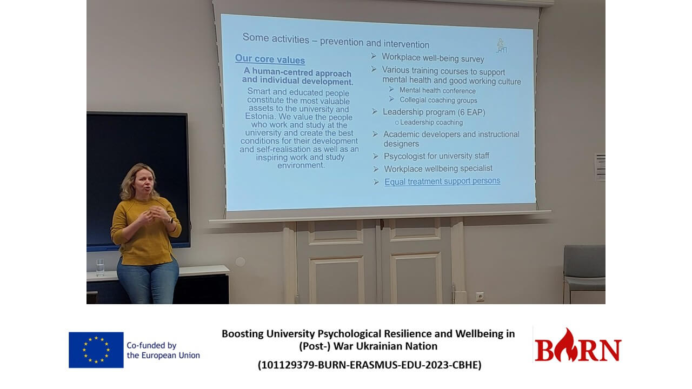
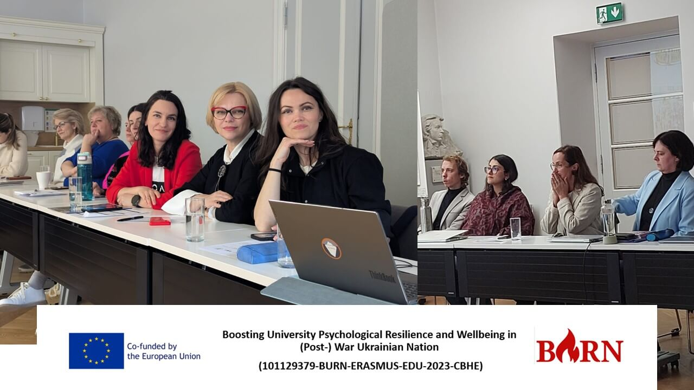
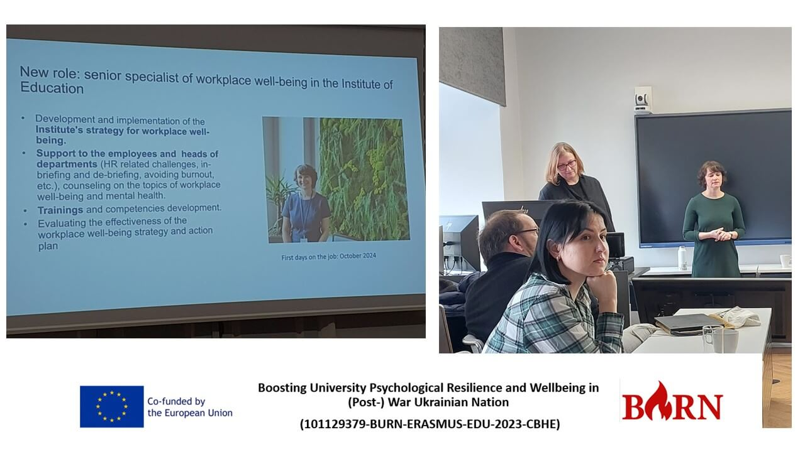

University Mental Well-being Culture: Estonian study visit (Tartu, March 10, 2025)
On March 10, 2025, during the first part of the study visit, teams from Ukrainian universities discussed the mental health support system within universities and the leadership program for professors at the University of Tartu, which was introduced in 2020. This part of session logically assosiate with the Caregivers Support Model, presented as an inclusive, trauma-informed system by Dr. Phil Langer and Carmen Scher (IPU) at the BURN project's Winter School in January. This approach remains highly agile, responding to the increasing complexity of the university ecosystem, which encompasses teaching, research, and project management.

The visit began with a monitoring presentation on staff satisfaction with working conditions, assessed across ten factors and analyzed through a gender-sensitive lens and job position levels. This method is part of a data-driven university strategy aimed at policy change, emphasizing not only vertical systemic influence but also horizontal engagement, ensuring active participation from all university team members.
  
Since 2020, the University Leadership Program has developed ten distinct leadership groups. A key takeaway from data analysis is that professors holding both research and teaching positions experience the heaviest workload compared to those engaged solely in research or teaching. Consequently, those in combined roles should remain a priority within university support systems. The second component introduced faculty focus groups, led by mental health specialists, to address workload distribution and problem-solving, following the Job Demands-Resources Model (Bakker & Demerouti; Schaufeli, 2017).
The third component focused on professional development courses for university staff (both mandatory and elective), covering topics ranging from teaching didactics to Equal Treatment ABC. In 2024 alone, 6,500 staff members (including family members) participated in these training programs.
Last but not least, since December 2024, a new individual coaching program for managers has been launched. It focuses on improving leadership skills, enhancing team dynamics, and achieving strategic goals. In total, 24 managers have selected their personal coach from across Estonia. Each coach was chosen through a competitive process and receives an honorarium.